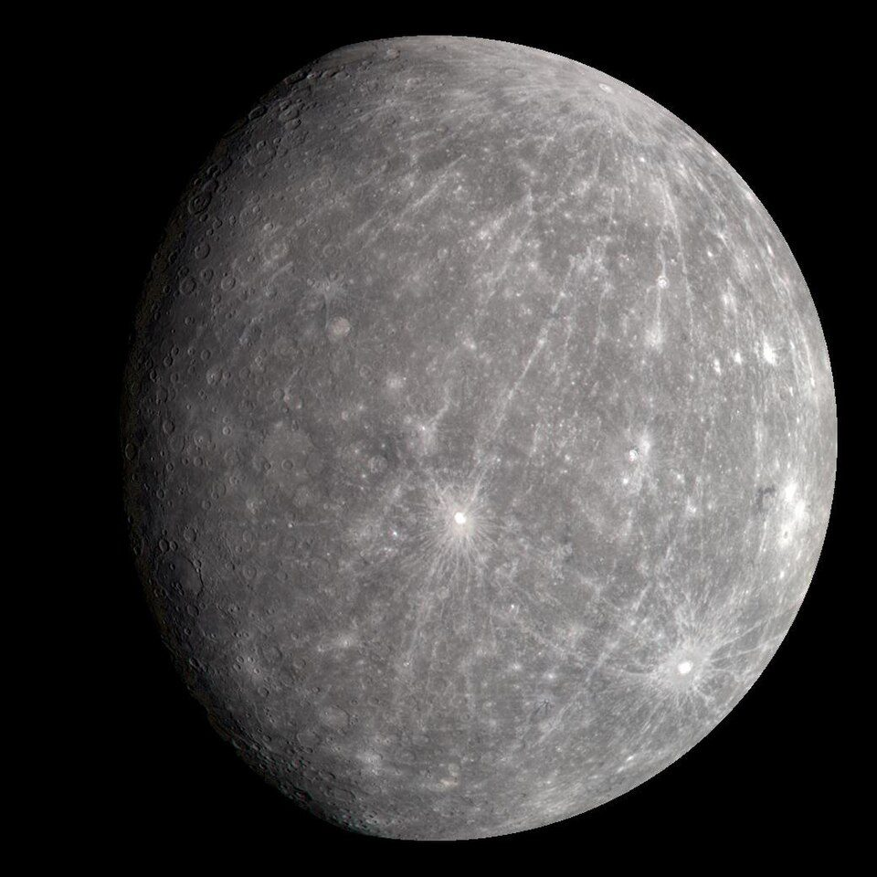
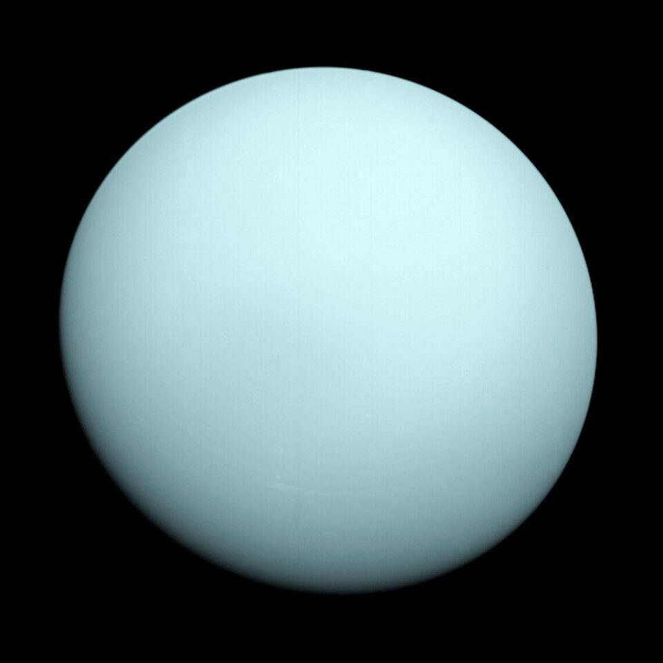
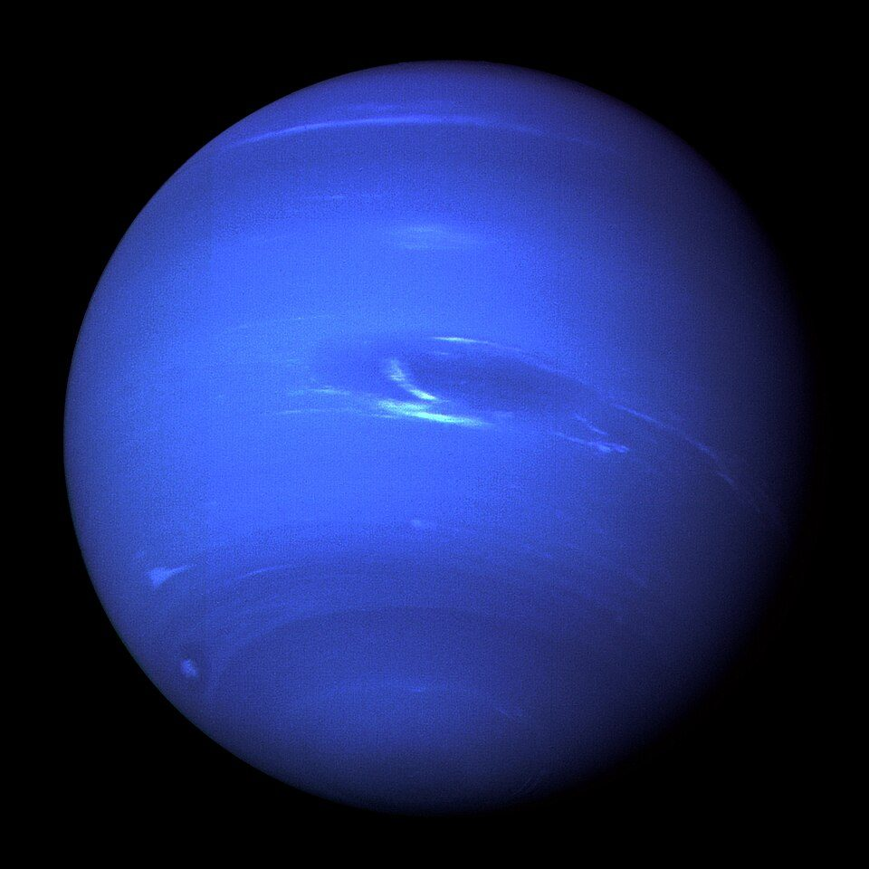

Universo · 14 fichas
Sistema solar
El Sol, los ocho planetas, sus lunas, los planetas enanos, los asteroides y los cometas: todo lo que gira a nuestro alrededor.
Nuestro sistema solar se formó hace 4.600 millones de años a partir de una nube de gas y polvo. Hoy lo forman una estrella, ocho planetas, cientos de lunas y millones de cuerpos más pequeños. En estas fichas encontrarás cada uno de ellos, con fotografías reales de las sondas que los han visitado, sus cifras principales y las historias de cómo los descubrimos.
 El sistema solarUna estrella, ocho planetas, cientos de lunas y millones de cuerpos menores que giran juntos desde hace 4.600 millones de años.
El sistema solarUna estrella, ocho planetas, cientos de lunas y millones de cuerpos menores que giran juntos desde hace 4.600 millones de años. El SolUna estrella corriente que, a 150 millones de kilómetros, nos da luz, calor y la energía de casi toda la vida en la Tierra.
El SolUna estrella corriente que, a 150 millones de kilómetros, nos da luz, calor y la energía de casi toda la vida en la Tierra.
MercurioEl planeta más pequeño y el más cercano al Sol: un mundo de cráteres con días abrasadores y noches heladas. VenusEl gemelo infernal de la Tierra: un planeta de nubes ácidas y 465 °C donde el Sol sale por el oeste.
VenusEl gemelo infernal de la Tierra: un planeta de nubes ácidas y 465 °C donde el Sol sale por el oeste. La TierraEl único planeta conocido con vida y con agua líquida en su superficie: nuestro hogar, visto como un planeta más.
La TierraEl único planeta conocido con vida y con agua líquida en su superficie: nuestro hogar, visto como un planeta más. La LunaNuestro único satélite natural: nació de un choque gigantesco, mueve las mareas y es el único mundo que ha pisado el ser humano.
La LunaNuestro único satélite natural: nació de un choque gigantesco, mueve las mareas y es el único mundo que ha pisado el ser humano. MarteEl planeta rojo: desiertos de óxido, el mayor volcán del sistema solar y huellas de ríos que corrieron hace miles de millones de años.
MarteEl planeta rojo: desiertos de óxido, el mayor volcán del sistema solar y huellas de ríos que corrieron hace miles de millones de años. JúpiterEl gigante del sistema solar: más masa que todos los demás planetas juntos, una tormenta mayor que la Tierra y casi un centenar de lunas.
JúpiterEl gigante del sistema solar: más masa que todos los demás planetas juntos, una tormenta mayor que la Tierra y casi un centenar de lunas.- SaturnoEl señor de los anillos: un gigante tan ligero que flotaría en el agua, rodeado de hielo y con más lunas que ningún otro planeta.

UranoEl gigante de hielo que gira tumbado: un planeta turquesa con estaciones de 42 años de día o de noche.
NeptunoEl planeta más lejano: un mundo azul intenso con los vientos más rápidos del sistema solar, descubierto gracias a las matemáticas. Las lunas del sistema solarVolcanes de azufre, océanos ocultos bajo el hielo y lagos de metano: las lunas son algunos de los mundos más asombrosos que conocemos.
Las lunas del sistema solarVolcanes de azufre, océanos ocultos bajo el hielo y lagos de metano: las lunas son algunos de los mundos más asombrosos que conocemos. Plutón y los planetas enanosPlutón, Ceres, Eris, Haumea y Makemake: mundos redondos que no llegan a planetas, y el cinturón de Kuiper donde viven casi todos.
Plutón y los planetas enanosPlutón, Ceres, Eris, Haumea y Makemake: mundos redondos que no llegan a planetas, y el cinturón de Kuiper donde viven casi todos. Asteroides, cometas y meteoritosLas piezas sobrantes del sistema solar: rocas, bolas de hielo sucio y las estrellas fugaces que caen cada noche.
Asteroides, cometas y meteoritosLas piezas sobrantes del sistema solar: rocas, bolas de hielo sucio y las estrellas fugaces que caen cada noche.